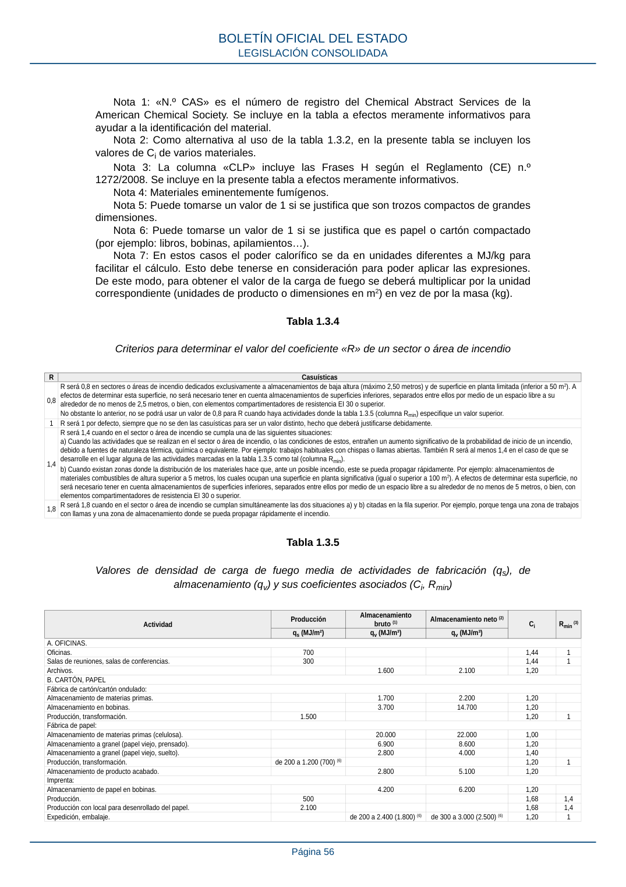

RSCIEI · edición 2025-04-10 · capa asociada
Documento RSCIEI-asociada · SHA-256 del PDF 85aa0af25d51e5b58d8975a4eefbf76d3f57a8933445cfe814ae9c4818a2e3e7
Copia fiel del PDF fuente · Fuente oficial
Ficha de la disposición en la fuente oficial
Texto extraído y reorganizado: Basado en datos de la Agencia Estatal Boletín Oficial del Estado. PDF reproducido: Fuente de los datos: Agencia Estatal Boletín Oficial del Estado.
Formatos: JSON del segmento · Markdown
Criterios para determinar el valor del coeficiente «R» de un sector o área de incendio R Casuísticas 0,8 R será 0,8 en sectores o áreas de incendio dedicados exclusivamente a almacenamientos de baja altura (máximo 2,50 metros) y de superficie en planta limitada (inferior a 50 m2). A efectos de determinar esta superficie, no será necesario tener en cuenta almacenamientos de superficies inferiores, separados entre ellos por medio de un espacio libre a su alrededor de no menos de 2,5 metros, o bien, con elementos compartimentadores de resistencia EI 30 o superior. No obstante lo anterior, no se podrá usar un valor de 0,8 para R cuando haya actividades donde la tabla 1.3.5 (columna Rmin) especifique un valor superior. 1 R será 1 por defecto, siempre que no se den las casuísticas para ser un valor distinto, hecho que deberá justificarse debidamente. 1,4 R será 1,4 cuando en el sector o área de incendio se cumpla una de las siguientes situaciones: a) Cuando las actividades que se realizan en el sector o área de incendio, o las condiciones de estos, entrañen un aumento significativo de la probabilidad de inicio de un incendio, debido a fuentes de naturaleza térmica, química o equivalente. Por ejemplo: trabajos habituales con chispas o llamas abiertas. También R será al menos 1,4 en el caso de que se desarrolle en el lugar alguna de las actividades marcadas en la tabla 1.3.5 como tal (columna Rmin). b) Cuando existan zonas donde la distribución de los materiales hace que, ante un posible incendio, este se pueda propagar rápidamente. Por ejemplo: almacenamientos de materiales combustibles de altura superior a 5 metros, los cuales ocupan una superficie en planta significativa (igual o superior a 100 m2). A efectos de determinar esta superficie, no será necesario tener en cuenta almacenamientos de superficies inferiores, separados entre ellos por medio de un espacio libre a su alrededor de no menos de 5 metros, o bien, con elementos compartimentadores de resistencia EI 30 o superior. 1,8R será 1,8 cuando en el sector o área de incendio se cumplan simultáneamente las dos situaciones a) y b) citadas en la fila superior. Por ejemplo, porque tenga una zona de trabajos con llamas y una zona de almacenamiento donde se pueda propagar rápidamente el incendio. Tabla 1.3.5
